Aestetic Anime
I made this style using android app pixel lab and thats result pretywell no many personal comment abot this one.
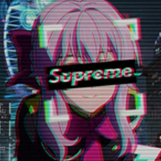Real life to anime 2
Now this is what i named by intermediate real life to anime many technique has been improved or added in this style such as removing bg by precise,and using brush correctly and split so many buildong to a few components
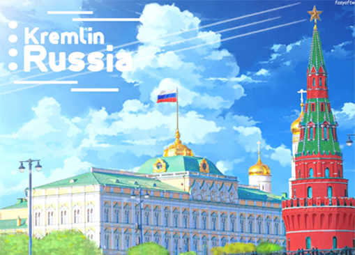Anime Poster
Moving On to Poster design i really love overdecorated style at that time so i learn how to make good poster with various shape and components in it
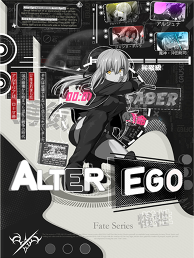Sumpah Pemuda Poster (Graphic design competition)
next this is the first time i join the graphic design competition at the class and on this competition i designed Sumpah Pemuda poster but i didnt won,maybe its because my Poster Is to Modernistic.
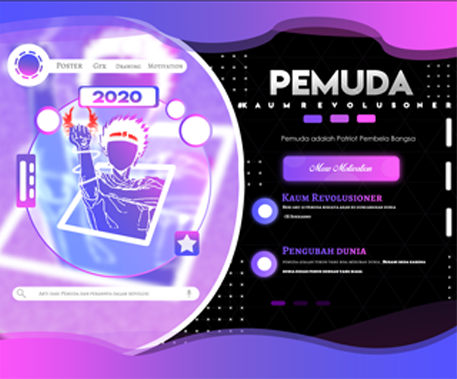Community Icon Christmas event (1# Winner)
It Was my first time for won the competition that conducted by Holosimp Community i was paidout 300k rupiah at that time for server logo design
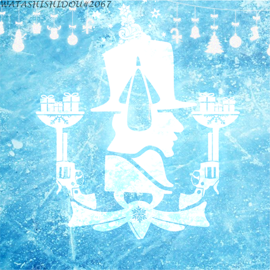Custom Hoshimachi Suisei Lanyard
My custom Lanyard was printed out by Wellen Print but made by me on 24 october 2022 design through the enviness of my friends Extracullicular lanyard
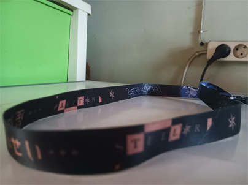Real life to anime
This is my First anime to real life design the first object i changed is eivel tower this is much easier than next intermediate style
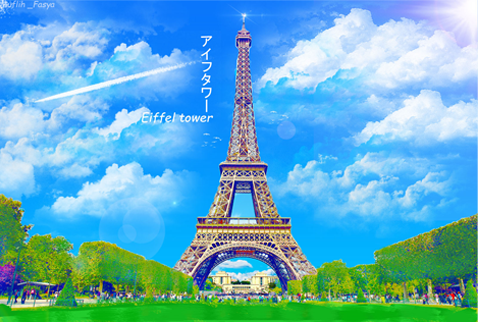Real life to anime 3
Heheyy this is the last anime style that i want to introduce to y’all the advance so in this chase after split bulding to a few components u need to use hue tools to make perfect atmospere at afternoon.
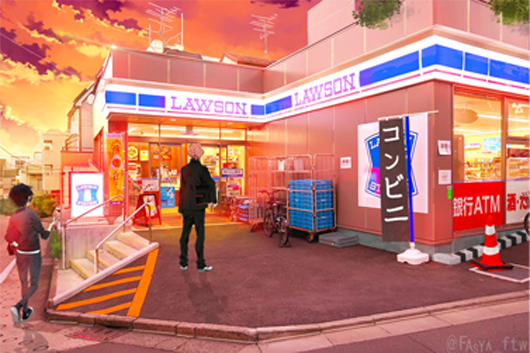Anime UI Test
This is Anime UI TEst this is first time i learn how to make good anime design by UI style
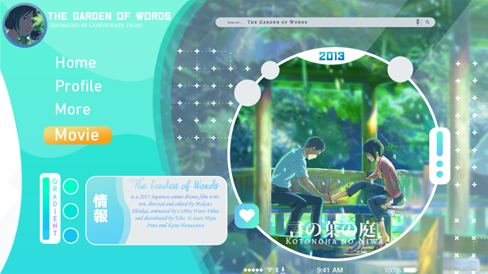Typography Style
this is my Typography style i iinspired by adam ananta at facebok and at this rate i learn how to combine my overdecorated style with Typography and its blend very well.
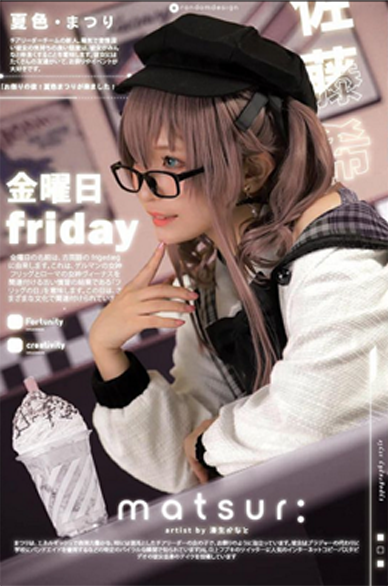Suisei T-Shirt
My T-Shirt designed by me and printed VIA cititex Indonesia i thought it i’ll be worse but supprisingly it was printed very good not bad for my first cutom design
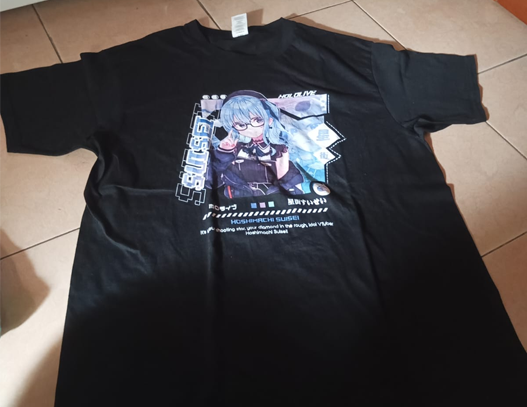